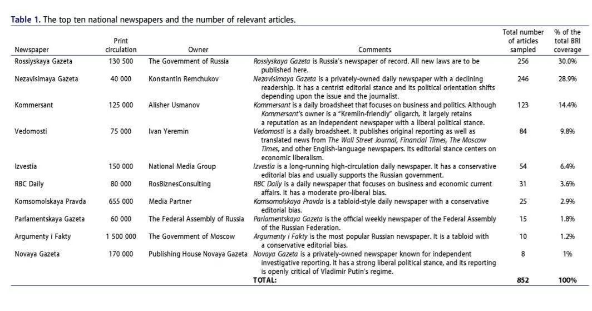
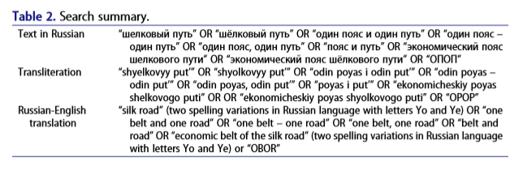
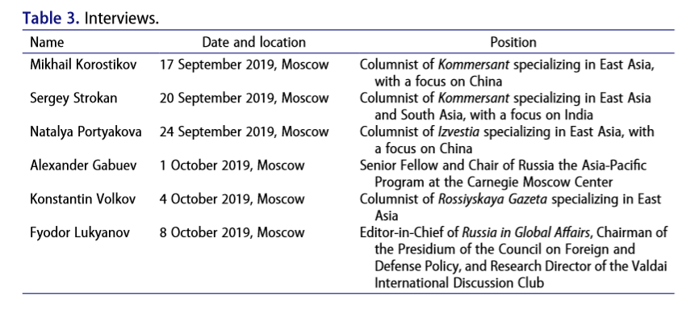
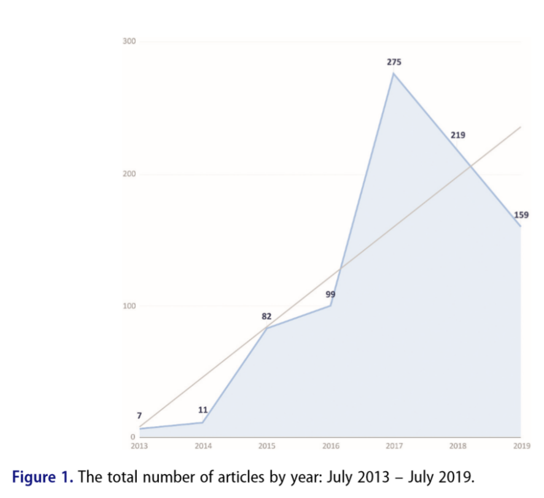
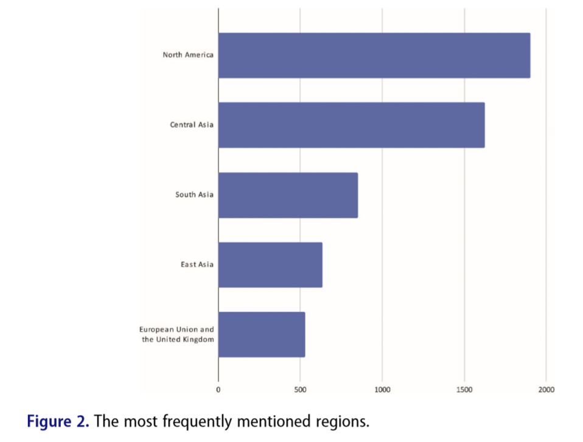
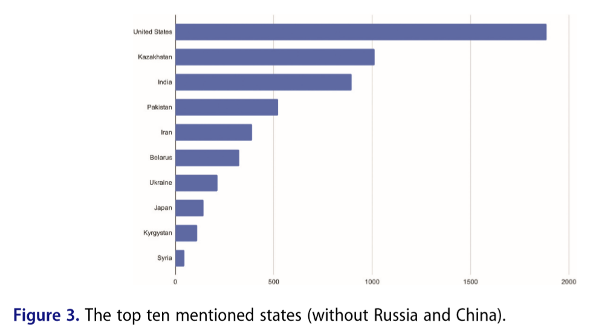
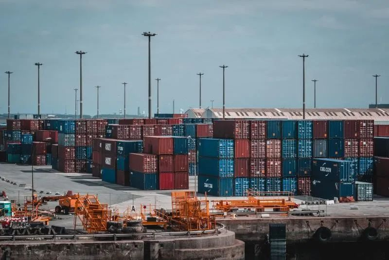

收录于合集

作品简介
【作者】 Anna Kuteleva，国立研究型大学高等经济学院国际区域研究学院；Dmitrii Vasiliev，俄罗斯人民友谊大学国际关系学理论与历史学系。
【编译】 黄慧彬（国政学人编译员，复旦大学国际关系与公共事务学院硕士研究生）
【校对】 刘颖哲
【审核】 姚寰宇
【排版】 谭誉豪
【美编 】黄竹音
【来源】 Anna Kuteleva & Dmitrii Vasiliev (2020): China’s belt and road initiative in Russian media: politics of narratives, images, and metaphors, Eurasian Geography and Economics , DOI:
10.1080/15387216.2020.1833228
期刊简介
《欧亚地理学与经济学》（Eurasian Geography and Economics）是涵盖欧亚大陆经济、政治地理和宏观经济学的同行评议学术期刊，双月刊。2019年该刊的影响因子为1.193，在区域研究类SSCI期刊中排名22。
俄罗斯媒体中 “一带一路”倡议 ：
叙述、形象和隐喻的政治
China’s belt and road initiative in Russian media: politics of narratives, images, and metaphors
Anna Kuteleva
内容提要
通过“一带一路”倡议（Belt and Road Initiative, BRI)可以看出，中国正在国际体系中为自己打造一个新的空间，包括了通常被俄罗斯视为后院的欧亚地区。这就引出了俄罗斯如何认知以及呈现“一带一路”倡议的问题。本文通过分析2013年至2019年俄罗斯主流报纸对“一带一路”的报道，追溯报道中关于该倡议不同话题的可见度，绘制其六年来关注焦点的变化，认为尽管俄罗斯报纸中关于“一带一路”倡议的定义包含了多个相互矛盾甚至相互竞争的话语框架，俄罗斯提出的“对接”（linking up）欧亚经济联盟（Eurasian Economic Union, EAEU)与“一带一路”倡议的提议仍获得了一致支持，并被视为一个符合俄罗斯国际地位的战略。由此得出结论，俄罗斯报纸认同中俄关系的官方叙述，并追随这一趋势。
【关键词】 中俄关系 一带一路倡议 欧亚经济联盟 话语分析
文章导读
中国非凡的转变引发了人们探讨全球未来的兴趣，中国国际项目成为关注焦点，“一带一路”项目引起热议。该倡议涵盖了通常被俄罗斯视为后院的欧亚地区，探讨俄罗斯对此的态度成为一个值得研究的问题。
本文通过分析自2013年9月至2019年7月间各大俄语报纸对“一带一路”倡议的报道，概括了报道的主要模式，并绘制了俄罗斯提出的“对接”欧亚经济联盟与“一带一路”倡议的提议在其媒体中话语政治的演变。本文旨在明确俄罗斯媒体关于“一带一路”倡议报道的主要方面，着重分析媒体如何构建和影响中俄在欧亚地区的合作。分析表明俄罗斯媒体关于该倡议的报道创造了一种霸权性和单一的叙述，凌驾于政治和政策的变化之上，致使没有余地发展中俄关系的其他途径及对“对接”进行批判性评价。
01
俄罗斯与中国：欧亚地区“融合的一体化”
中俄建交至今两国关系经历了起伏，如今处于历史最高点。尽管俄罗斯有专家支持与中国战略和解，但也有专家担忧双边关系中日益增长的不对称性以及俄罗斯在中美构成的世界经济两极格局中处于从属地位。另一方面，中国专家认为普京政权对西方采取了明确的咄咄逼人的态度，中国不应参与这场新的地缘政治竞争。
“一带一路”倡议的扩大和俄罗斯的参与由此成为一个棘手的问题。 中俄两国领导人于2015年签署了两国声明，俄罗斯代表认为这标志着欧亚经济联盟与“一带一路”倡议的“对接”，欧亚地区一体化进程就此启动。然而， 中俄对“一带一路”的愿景是否彼此融合？
一方面，学者们从现实主义和权力政治的视角预测中俄在欧亚地区的对话前景黯淡。 他们认为欧亚经济联盟与“一带一路”倡议会相互竞争，因为后者是“中国为解决其面临的根本地缘政治挑战所做的重要努力”，而前者是俄罗斯对中国在其传统势力范围内不受欢迎的扩张的战略回应。 按照零和博弈的逻辑，欧亚地区是一个战场而非合作空间。
另一方面，其他学者表示尽管“对接”面临挑战，但其结果将是一个一体化的区域经济和物流体系，双方都将从中获益。 俄罗斯的许多研究认为“一带一路”倡议为俄罗斯提供了新的发展机遇，因为它为当前的世界贸易秩序呈现了一个可能且可信的替代方案。因此，俄罗斯对“一带一路”倡议的回应源于为现代化和长期发展获得可靠的国际合作伙伴的需要，这也有助于解决严重的安全问题。
另外，地缘政治和话语逻辑的研究提供了一个微妙的视角，即中俄各自的区域项目是对全球化的不同反应，因此不仅要分析经济和安全上的理由，还要把握诸如社会背景、主体间意义和身份认同等变量。
02
方法论：框定分析及话语政治
21世纪初与中国有关的新闻风靡全球，与此同时，关于中国崛起的报道的研究表明海外公众对中国的看法存在分歧， 中国的自我展现和其他国家呈现的中国形象不相匹配。 尽管中国将自身描绘成一个仁慈和平的区域大国，但大多数国际媒体仍认为中国的崛起是一个挑战。
框架分析使研究能够解释媒体如何建构和重构中国形象以及效果如何。此研究证实了 新闻媒体偏向国内政治的倾向，新闻媒体将国家的参考框架应用到国外新闻事件，将其定位在熟悉的语境中。
本文旨在明确关于“一带一路”倡议报道的主要模式，并绘制俄罗斯媒体关于“对接”的话语政治的演变。 话语政治是指各种行动者有意和无意地参与有关具体政治和政策过程的意义和概念框架的辩论。 根据这一定义，本文考察了俄罗斯媒体引导受众关注“一带一路”倡议有关报道中某些特征的方式，以及在此过程中创建的对中俄关系的叙述。
本文样本包括了2013年7月21日到2019年7月21日间在十大引用率最高的俄文报纸上发表的文章（Table 1）。样本范围之广使我们能够解释不同的政治立场和制定议程的相关趋势。我们通过几组搜索词确定了1664篇文章（Table 2）。
 
本文使用 内容分析 和 话语分析 两种方法来评价数据。内容分析研究的是文本本身，本文用于绘制“一带一路”倡议媒体报道历年的变化并追踪特定主题的可见度。相反，话语分析更关注将文本和语境连接起来，着重于话语建构如何支持特定机制、意识形态和权力关系。
本文还探讨了主要的框定战略。这一部分借鉴了跨学科的 批评性话语分析 (Critical Discourse Analysis, CDA)视角，有助于解释俄罗斯媒体是如何框定“一带一路”倡议的，以及其影响如何。此外，批评性话语分析建立在对文本的浸入性基础上，并隐含着对具体语境和文化意义的仔细考察，这就是本文用原文（俄语）分析的原因。
为了支持我们的文本分析，我们对俄罗斯主要专家和报道中国的记者进行了11次 半结构化采访 （Table 3）。通过采访我们理清了俄罗斯主流报纸议程设置的逻辑，洞察了俄罗斯媒体对“一带一路”报道的鲜明特色。

03
俄罗斯媒体中关于“一带一路”倡议报道的主流趋势
涉及“一带一路”倡议的报道有32.9%聚焦国际政治，25.4%关注国际经济新闻。 媒体对国际政治和经济的关注并不是线性发展的，而是围绕具体的事件出现波动和高峰。区域一体化和全球化进程是“一带一路”倡议报道的重要背景框架。 关注中俄以外国家国内政治的文章也提及了“一带一路”倡议(1.2%)。
明确以“一带一路”为重点的文章占涉及该倡议文本总数的21.2%。俄罗斯报纸从2016年才开始重视对“一带一路”倡议的报道（Figure 1），且主题多样性有限，主要围绕中国在欧亚地区的存在。此外，所有抽样报纸留给中国在东南亚、大洋洲和非洲的活动的版面份额明显少于留给中亚、南亚和欧洲的（Figure 2）。
 
连接了中国与东南亚和非洲的“21世纪海上丝绸之路”的作用被弱化了，而关于连接了中国内陆地区、中亚和欧洲的“丝绸之路经济带”的报道占据了俄罗斯媒体报道的绝大部分，其中78%以上关注中国与欧亚国家的关系， 俄罗斯势力范围内的欧亚国家受到广泛关注。 唯一的例外是美国，13.9%的文章直接针对美国，美国被提及的次数也比其他任何国家都要多（37%）（Figure 3）。 “一带一路”倡议不涵盖北美地区，而美国作为世界最大经济体和世界大国的总体新闻价值解释了数据集中美国的突出地位。 俄罗斯报纸关于印度、伊朗、白俄罗斯的报道相对较少，而相比之下叙利亚和乌克兰在报道中出现的频率普遍较高，但有关叙利亚、乌克兰对华关系及其与“一带一路”倡议关系的文章只有区区11篇。

总体而言，有关“一带一路”倡议的报道是被动的，而不是主动的。俄罗斯媒体并没有报道中国领导人在“一带一路”倡议理念和实践上的变化，而是聚焦于俄罗斯领导层对这些变化的反应。 我们所做的采访也证实了这一结论。
《俄罗斯日报》2017-2018年发表的56篇关于“一带一路”倡议的文章中有45篇是中国记者或官方代表撰写的，其他抽样报纸也大量援引了中国共产党的消息。所有文章中高达97%的引用来自中国最高官员代表。同时我们的受访者也承认他们很难联系上中国的专家，只能援引中国官员的言论。 他们认为中国的官方代表试图影响俄罗斯记者对中国的态度，但没有人认为这是一种压力或胁迫。 俄罗斯的话语空间也是官方代表所主导，尤其是弗拉基米尔•普京(Vladimir Putin)和谢尔盖•拉夫罗夫(Sergey Lavrov)。
因此，我们观察到了一幅具有异质性意义的地图，象征性地描绘了与“一带一路”倡议相关的重要区域，并突出了其中多元的特征、理念和价值观。下一节将探讨俄罗斯媒体在阐释“一带一路”倡议中所使用的论述性方法和策略，以此推动对其目的和意义的具体解读。
04
**
**
俄罗斯媒体中关于“一带一路”倡议的话语建构
俄罗斯媒体对“一带一路”的定义多种多样，对于术语的选择也令人感到困惑。更重要的是，大多数的文章都把对“一带一路”倡议的描述和评估推向了逻辑的极端。 一方面，一些报纸认为“一带一路”倡议是国际秩序的战略重构；另一方面，怀疑论者认为“一带一路”倡议缺乏可信度和连贯的战略意图。其他报纸则混合了以上两种观点，没有表现出明确的立场，为“一带一路”倡议的乐天派和悲观派提供了平台。
“一带一路”倡议的支持者称其为 “宏大的事业”等。俄罗斯的观察人士还将古代丝绸之路的历史神话化、浪漫化，他们认为 “一带一路”倡议是一个契机，使数百年前连接中国和世界的经济、社会和文化网络重现生机。 在此框架下，俄罗斯媒体复制了中国官方的地缘政治叙事，认为“一带一路”是永恒和及时的。
“一带一路”倡议物质化的积极成果表现为一系列的公路和铁路网，它成为了一个发展运输和物流基础设施的工程，增加了国际贸易的流动。这样的背景下， 中国与其合作伙伴之间务实互利的关系成为“一带一路”倡议中政治话语的核心，“双赢”成为最常出现的主题。 支持者认为对“一带一路”的批评是中国威胁论的一种表达， 西方的批评被描述为一种非理性的恐惧和一种软弱的迹象。
相反，批评人士强调，“一带一路”倡议缺乏连贯和全面的战略。 一些批评人士淡化了中国领导人宣布的成就，降低了“一带一路”在发展中国家获得的积极反馈的价值。 关于“一带一路”倡议的负面框定主要关注的是其背后的动机。
最后，观察人士和专家经常是在中美在亚太地区的地缘政治竞争的语境下提起“一带一路”倡议。 将美国描绘成对中国怀有敌意的国家的报道重点解释了美国外交政策的转变，并讨论了中国、俄罗斯和美国构成的战略三角中的力量平衡。
鉴于“丝绸之路经济带”的重要性，“一带一路”倡议首先进行欧亚合作，着眼于大陆内部。这一观点体现了一下两个方面：首先，“欧亚中心”的解读反映出媒体密切关注中国是如何在俄罗斯后院“开辟新的势力范围的”，却较少关注项目真正的来源、目标和范围；其次，这一框架表明，俄罗斯并不是“一带一路”倡议的惰性参与者，而是中国独特且不可缺少的合作伙伴。在这样的背景下，中俄以“对接”为品牌的合作叙事成为了俄罗斯“一带一路”政治话语的前沿。
05
俄罗斯的“对接”倡议与中俄关系的话语政治
俄罗斯代表在2015年5月宣布欧亚经济联盟与“一带一路”倡议的融合称为“对接”。同年，瓦尔代国际辩论俱乐部（the Valdai Discussion Club）在其年度公开报告中也提出了该想法。到2015年底，“一带一路”倡议在媒体上的讨论围绕“对接”展开。
“融合的一体化”（integration of integrations）被定义为两个独立的项目的“同步（synchronization）”或“对接（docking）”。 “一带一路”倡议的乐天派认为欧亚经济联盟和“一带一路”倡议能够互相补充而非相互竞争。 一些专家还强调，中国需要俄罗斯的程度超过俄罗斯需要中国的程度。媒体观察人士采取了这种说法，同时也强调了“对接”的互利性。
此外，“对接”的框架还包括对美国和欧盟或明或暗的批评。 美国是“鲁莽的”，而欧盟是“被动的”且“将自身孤立于欧亚一体化进程之外”。 “对接”将使美国无法在“新的全球对抗中击败俄罗斯和中国，并将它们纳入美国的世界秩序”。 在中美贸易冲突的背景下，俄罗斯观察人士通过强调抵制“优惠贸易体制”、“保护主义政策”和“不合理的制裁”的必要性，来突显“对接”对中俄的时效性和相关性。
所有的文章都称赞普京提出的详细的关于“对接”的合作策略，并承认他是谈判进程的启动者。这样的框架使得“对接”成为俄罗斯人的发明。因此， 观察人士和专家可以将俄罗斯定位为一个具有独立决策权的大国，不被动融入“一带一路”倡议，而仅仅是支持“一带一路”倡议，从而保持与中国的平等地位。
综上所述，俄罗斯报纸将“对接”作为与中国在区域一体化领域务实合作的一种形式。他们认为“对接”是俄罗斯加入“一带一路”倡议的唯一可能。 在这个框架下，它成为一种互利的战略，可以维持中俄关系中的力量平衡，并为共同应对美国的敌对政策奠定基础。 各方对“一带一路”倡议意见不一，但一致支持和赞同“对接”，并视其为符合俄罗斯国际地位的战略。
06
结论
俄罗斯媒体关于“一带一路”倡议的报道褒贬不一，中俄关系及欧亚地区是关注焦点，其他地区都被淡化了，美国是唯一例外。 这一框架揭示出了两种显著的话语模式—— “一带一路”倡议影响力下降及美国是中俄关系的重要变量。因此，俄罗斯在“一带一路”倡议框架下与中国交往的决定是有条件的，取决于俄罗斯与西方的关系。
观察人士和专家强调，“对接”欧亚经济联盟和“一带一路”倡议的提议是为了让俄罗斯按照自己的意愿加入“一带一路”倡议，而不牺牲其在欧亚地区秩序中具有象征意义的领导地位的战略性设计，符合俄罗斯的国际地位，对此一致支持。 由此可见， 俄罗斯报纸实际上在追随潮流而非创造潮流，他们支持中俄关系的官方叙述。
基于本文得出未来研究的四个方向。首先，综合比较俄罗斯记者的职业实践和传统对处理外国新闻的影响有助于得出更深刻的见解；其次，更广泛地从俄罗斯地区媒体等次国家层面分析话语框架有利于突破对国家单一、同质的假定；第三，加入中国媒体在涉及俄罗斯参与“一带一路”倡议时如何建构和重构俄罗斯形象的对称性研究有助于呈现中俄关系全貌；最后，对中国建设冰上丝绸之路（Polar Silk Road）的研究有助于补充俄罗斯北海路线的话语政治研究。

译者评述
中国的“一带一路”倡议可谓是一个宏大的工程，因其所涵盖范围之广、涉及领域之多。“一带一路”倡议整体的话语建构还假定沿线将会建立起更紧密的社会文化和政治联系，地缘政治格局也可能随之发生变化。其中涉及的各种复杂的大国关系就为“一带一路”倡议的推行提出了挑战。欧亚地区是“丝绸之路经济带”的必经之路，也通常被俄罗斯视为其后院，中俄关系正处于历史最高点，而两国对此地区的各自利益有自己的考量。中国旨在维护自己的边界安全和发展经济利益[1]，而于俄罗斯来说，力争保持自身的独立地位和对欧亚地区的影响力是其争取的目标。但介于其自身日渐不甚乐观的地位和一如既往的野心，如何看待且回应中国所提出的“一带一路”倡议成为俄罗斯国内媒体所热议的话题。
本文的研究基于2013年9月至2019年7月间各大俄语报纸对“一带一路”倡议的报道及对俄罗斯主要专家和报道中国的记者进行的11次半结构化采访，还从话语政治的角度，用框定分析等方法研究了俄罗斯媒体对“一带一路”倡议报道的主要模式和特点。译者认为有几点是值得关注的：1.俄罗斯媒体的报道倾向于将国际新闻“国内化”，具有事件驱动性；2.俄罗斯媒体的相关报道近乎呈现出以欧亚地区为中心的特点；3.俄罗斯媒体十分重视将美国这一因素纳入对“一带一路”倡议的报道中。就第一点而言，将客观叙述的国际新闻进行话语转述，使其能够被国内群众消费，这是自然不过的做法。但俄罗斯媒体的报道还很大程度上受领导人普京总统的行程及其会见外国领导人等大事件推动，这就暗含了媒体报道与官方叙述之间的潜在联系，也为后来在对待“对接”合作上媒体对官方叙述的追随态度做下了铺垫。其次，“一带一路”倡议涵盖的广泛范围在俄罗斯媒体中被有意地缩小了，一方面可以理解为由于其利益所及有限，另一方面也可以看出中国在欧亚地区的意图可能被夸大和严重化了。中国在“一带”与“一路”上并没有做出重要性的区分，而俄罗斯媒体的选择性重视可能推动了其国内对华质疑的声音的出现。最后，美国这一因素则更为复杂，一方面，欧亚地区本身的秩序就脱离不开美国，欧亚秩序的套娃模式最外层就是俄美在全球层面进行的竞争和合作，这一层次的互动将传导和影响该秩序中的其他层次[2]，具有“牵一发而动全身”的作用；另一方面，俄罗斯十分担心自己在中美构成的世界经济两极格局中处于从属地位，以及与中国关系中不对称的依赖使其一定程度上丧失自身的独立地位，且 “一带一路”倡议的建设将会显著提高中国在该地区的经济和地缘政治影响力，造成俄罗斯影响力不可避免地相对下降[3], 俄罗斯对此担心，那么借助美国进行平衡成为一个可以考虑的选择。
本文重点突出了俄罗斯媒体对“对接”的盛赞，但译者认为“对接”是俄罗斯唯一能够接受的融入“一带一路”倡议的方式，重点在于它是俄罗斯独立提出的，并不是附庸于“一带一路”倡议之下的，维护了其在中国面前所谓的“独立地位”，其实际的合作内容并没有过多的独创性，表面意义更大。但按照实际运行来说，无论何种层面的意义主导，这的确是能够使俄罗斯减少损失和获取最大利益的有效方式。
参考文献
[1] 曾向红. 欧亚秩序的套娃模式:地区分化及其影响[J]. 世界经济与政治,2019,(05):22-52+156-157.
[2] 李兴,耿捷. 中俄关系中的中亚因素对“一带一盟”对接的影响[J]. 学术探索,2019,(01):27-33.
[3] А.Г.拉林,В.А.马特维耶夫,高晓慧. 俄罗斯如何看待欧亚经济联盟与“丝绸之路经济带”对接[J]. 欧亚经济,2016,(02):18-26+125+127.
文章观点不代表本平台观点，本平台评译分享的文章均出于专业学习之用, 不以任何盈利为目的，内容主要呈现对原文的介绍，原文内容请通过各高校购买的数据库自行下载。
**
**
**
**
**
**
添加 “国小政”微信
获取最新资讯


国政学人
支持学术公益与知识传播
微信扫一扫赞赏作者 __赞赏
已喜欢，对作者说句悄悄话
取消 __
发送给作者
发送
最多40字，当前共字
上一页 1/3 下一页
长按二维码向我转账
支持学术公益与知识传播
受苹果公司新规定影响，微信 iOS 版的赞赏功能被关闭，可通过二维码转账支持公众号。